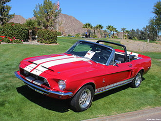

Shelby Cobra Series Website


The vehicle line this website is dedicated to is the Shelby
Cobra series, and more specifically, the GT500. Shelby Cobras
are sports cars, and they are very well known for their immense
speed. The Shelby Cobra series of vehicles was created in 1962
by Carroll Shelby, an American automotive designer, racing driver,
and entrepreneur and it has remained in production to this day.
The Shelby Cobra GT500 was created in 1967.
-
The first iteration was a remodeled AC Ace.
-
The first ever Shelby Cobra was auctioned for $13.75 million.
-
900 of the 1,000 original Shelby Cobras still remain.
-
It took three tries to make the finished product of the first model.
Shelby Cobra
Fun facts:
-
Ford offered free driving lessons, upon
the release of the 2020 GT500 -
Bill Cosby returned his two of a kind GT500
Super Snake, because turning the engine on scared him. -
The 2020 GT500 has the largest cobra snake
of any Shelby Cobra. -
The 2020 GT500 has the most power out of any Mustang.